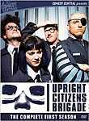

What is this site?
Stephen's Profile
Browser Extension
Stephen Klancher
Recent
Overall
Year Overview
Series
Lists
Upright Citizens Brigade
List contains: 30 items, 0.5 hours.
Seasons:
1
|
2
|
3
|
Title Search (4+ characters):
Group:
None
Example Group: Me and Stephen
Who's seen it:
No filter
Everyone
No One
Anyone
Anyone Has Not
Who's commented:
No filter
Everyone
No One
Anyone
Anyone Has Not
Netflix:
No Filter
Available for Instant Watch
Netflix Link Known
Netflix Link Unknown
Missing Data:
No Filter
Runtime
Season
Release Year (YYYY) or Decade (YYYx):
Sort:
Normal
Newest Episodes First
Episodes in Order
Recently Watched First
Watched in Order
Newest Releases First
Releases in Order
Stephen Klancher
...has seen 30
...has seen 0.5 hours
Timeline
Most Recent:
Town Hall

Season 1
Bucket of Truth (1998)
Airs on 1998-08-19
S1 - E1 of
Upright Citizens Brigade
Stephen Klancher
: SEEN
Poo Stick (1998)
Airs on 1998-09-16
S1 - E2 of
Upright Citizens Brigade
Stephen Klancher
: SEEN
Saigon Suicide Show (1998)
Airs on 1998-09-30
S1 - E3 of
Upright Citizens Brigade
Stephen Klancher
: SEEN
Power Marketing (1998)
Airs on 1998-09-02
S1 - E4 of
Upright Citizens Brigade
Stephen Klancher
: SEEN
Children's Revolution (1998)
Airs on 1998-09-09
S1 - E5 of
Upright Citizens Brigade
Stephen Klancher
: SEEN
Story of the Toad (1998)
Airs on 1998-08-26
S1 - E6 of
Upright Citizens Brigade
Stephen Klancher
: SEEN
Lady of the Lake (1998)
Airs on 1998-10-07
S1 - E7 of
Upright Citizens Brigade
Stephen Klancher
: SEEN
Time Machine (1998)
Airs on 1998-10-14
S1 - E8 of
Upright Citizens Brigade
Stephen Klancher
: SEEN
Cyborgs
Airs on 1998-02-15
S1 - E9 of
Upright Citizens Brigade
Stephen Klancher
:
February 18, 2008
Little Donny Foundation (1998)
Airs on 1998-10-28
S1 - E10 of
Upright Citizens Brigade
Stephen Klancher
:
February 18, 2008
Season 2
Master Dialectitian (1999)
Airs on 1999-06-14
S2 - E1 of
Upright Citizens Brigade
Stephen Klancher
:
February 18, 2008
Bomb Squad (1999)
Airs on 1999-06-21
S2 - E2 of
Upright Citizens Brigade
Stephen Klancher
:
February 18, 2008
Mogomra vs. the Fart Monster (1999)
Airs on 1999-06-28
S2 - E3 of
Upright Citizens Brigade
Stephen Klancher
: SEEN
Real World (1999)
Airs on 1999-07-05
S2 - E4 of
Upright Citizens Brigade
Stephen Klancher
: SEEN
Eli's Face Therapy (1999)
Airs on 1999-07-12
S2 - E5 of
Upright Citizens Brigade
Stephen Klancher
: SEEN
Infested With Friars (1999)
Airs on 1999-07-26
S2 - E6 of
Upright Citizens Brigade
Stephen Klancher
:
March 24, 2008
Spaghetti Jesus (1999)
Airs on 1999-08-02
S2 - E7 of
Upright Citizens Brigade
Stephen Klancher
:
April 29, 2008
Big City (1999)
Airs on 1999-08-09
S2 - E8 of
Upright Citizens Brigade
Stephen Klancher
:
May 1, 2008
Hurricane (1999)
Airs on 1999-08-16
S2 - E9 of
Upright Citizens Brigade
Stephen Klancher
:
May 2, 2008
Supercool (1999)
Airs on 1999-08-23
S2 - E10 of
Upright Citizens Brigade
Stephen Klancher
:
May 5, 2008
Season 3
Costumes (2000)
Airs on 2000-01-17
S3 - E1 of
Upright Citizens Brigade
Stephen Klancher
:
May 5, 2008
Mafia (2000)
Airs on 2000-01-24
S3 - E2 of
Upright Citizens Brigade
Stephen Klancher
:
May 7, 2008
Hospital (2000)
Airs on 2000-01-31
S3 - E3 of
Upright Citizens Brigade
Stephen Klancher
:
May 10, 2008
Music (2000)
Airs on 2000-02-07
S3 - E4 of
Upright Citizens Brigade
Stephen Klancher
:
May 10, 2008
Food (2000)
Airs on 2000-02-21
S3 - E5 of
Upright Citizens Brigade
Stephen Klancher
:
May 10, 2008
College (2000)
Airs on 2000-02-28
S3 - E6 of
Upright Citizens Brigade
Stephen Klancher
:
May 13, 2008
Sex (2000)
Airs on 2000-03-06
S3 - E7 of
Upright Citizens Brigade
Stephen Klancher
:
May 13, 2008
Town Hall (2000)
Airs on 2000-03-20
S3 - E8 of
Upright Citizens Brigade
Stephen Klancher
:
May 16, 2008
Technology (2000)
Airs on 2000-03-27
S3 - E9 of
Upright Citizens Brigade
Stephen Klancher
:
May 16, 2008
Thunderball (2000)
Airs on 2000-04-03
S3 - E10 of
Upright Citizens Brigade
Stephen Klancher
:
May 16, 2008
Watched an episode not known by IMDb?
Season:
-
Episode:
Date:
Comment: